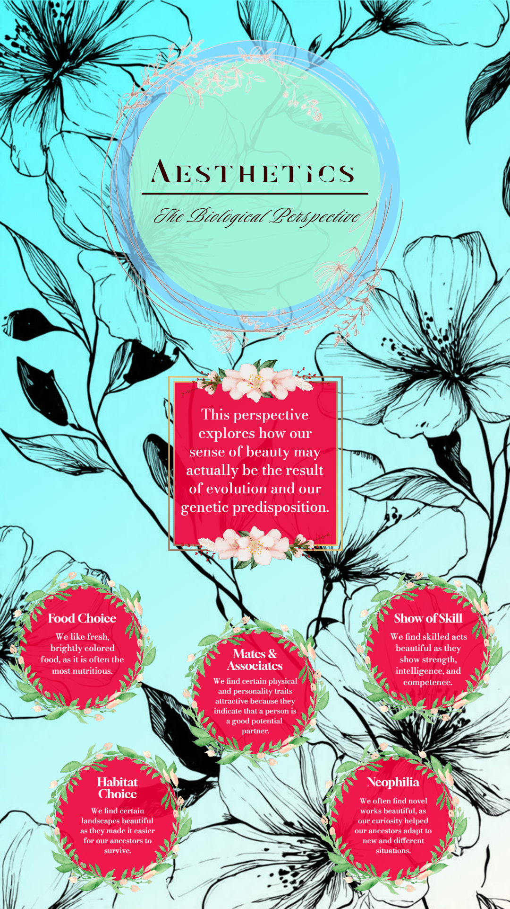
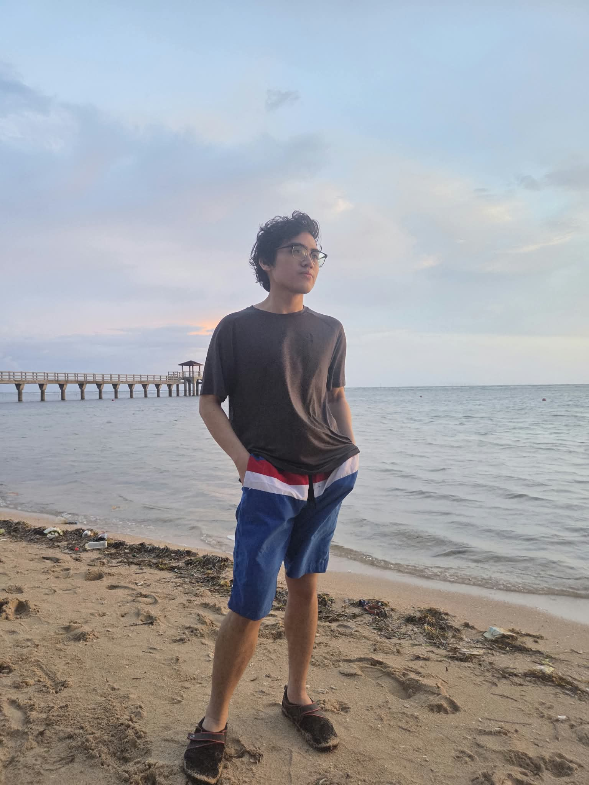
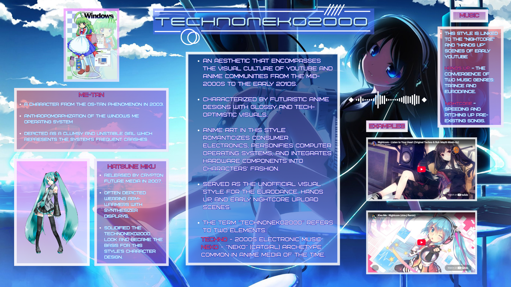
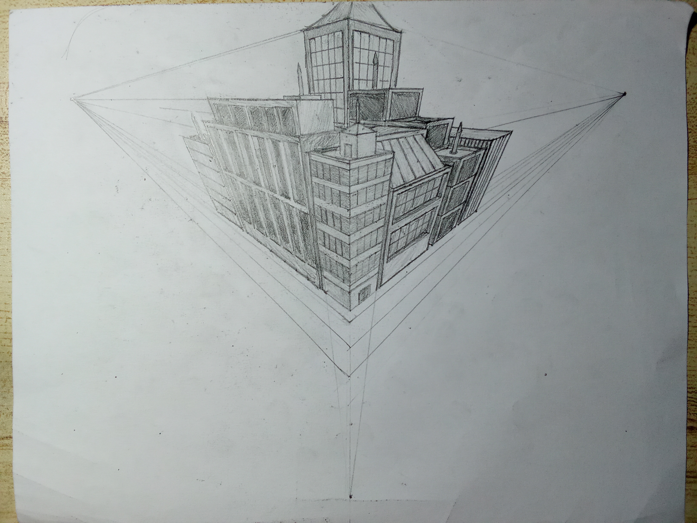

Infographic Poster

An infographic poster I created last term for MMS 170. It is, in my opinion, the best-looking poster I've made so far.
Live life freely

I’m Marc Gabriel I. Manlangit; you can call me Marc. I’m currently a student at the University of the Philippines Open University. I’m a carefree and easygoing person. I try not to overthink or let stress overwhelm me, and I try to live as happily as I can. I’m more introverted as a person, and I like to spend time by myself. Despite this, I do still enjoy spending time with my family and close friends.

An infographic poster I created last term for MMS 170. It is, in my opinion, the best-looking poster I've made so far.

A mood board I created for MMS 170 featuring and explaining the TechnoNeko2000 aesthetic.

A drawing I made for Math 10 using projective geometry.
Want to reach out to me? Feel free to do so by the following
Email: mimanlangit1@up.edu.ph